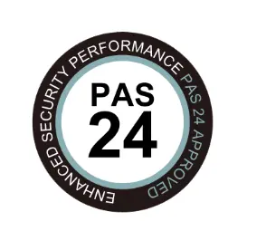
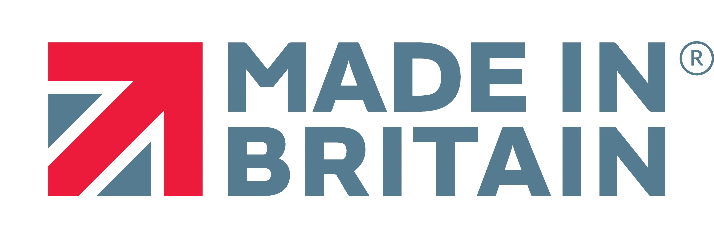
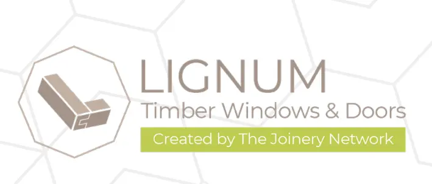

Certifications · Technology · Sustainability
The certifications that protect you, the technology that makes it possible, and the principles that guide every window we produce.



Your Protection
Every Prime Sash window is backed by independently verified certifications. These aren't marketing badges — they are legally recognised standards that protect your investment, your safety, and the value of your property.
Government-authorised scheme ensuring compliance with UK Building Regulations for all window installations. Every Prime Sash installation is automatically registered with your local authority. Essential for property sales — buyers' solicitors will request this certificate. Insurance-backed warranty included as standard.
The UK's leading security standard for windows and doors. Our products are tested against forced entry — including mechanical attacks of up to 450kg, manual attack with tools, and impact resistance with weighted rams. Required for new builds, increasingly expected on renovations. Many insurers offer reduced premiums for PAS24 installations.
Sash windows were invented in Britain over 350 years ago — and this is still the only place in the world where they are manufactured to the highest standard. Our windows are designed, engineered, tested and certified in the UK. Not imported. Not assembled from components made elsewhere. Every window carries the Made in Britain marque.
Our Manufacturing
Our windows are manufactured using the Lignum timber window and door system — developed by Owen Dare, master of window technology and founder of The Joinery Network. The Lignum system was engineered from the ground up to minimise waste, eliminate unnecessary sanding and painting, and deliver a consistently premium product — every time.
Our workshop operates in collaboration with the world's leading manufacturers of precision tooling and CNC machinery — including Leitz (Germany/UK, tooling), Felder (Austria, machinery) and Biesse (Italy/UK, CNC machining centres). This combination of a proven window system and world-class equipment allows us to deliver premium quality at a standard price — through standardisation, efficiency, and relentless attention to process.
We specialise exclusively in timber sash windows. No casements, no PVC, no compromises. Every process in our workshop is optimised for one product — done to perfection.
We manufacture only from premium hardwood (Meranti, Sapele), Oak for decorative applications, and Accoya for maximum longevity. We do not use softwood — the lifespan simply doesn't justify it for a premium product.
Every seal, gasket, glazing bead and fitting is independently certified. Our glazing system is PAS24 tested for security and delivers exceptional airtightness ratings.
Every frame is immersed in preprimer, primed twice, and topped with a finish coat using Sikkens Wood Coatings and Teknos microporous paint systems. Spray-applied for a flawless, factory-quality result.
Our glazing options include slimline double glazing, triple glazing, and Passive Glass — achieving U-values as low as 0.8 W/m²K. That exceeds the thermal performance of most new-build specifications.
Traditional lead weights in the box frame — no springs, no plastic balance systems. A properly balanced sash with lead weights will operate smoothly for a century or more.
Sustainability
The Joinery Network and its manufacturing partners — including us — are committed to reducing the carbon footprint of every component and process, while extending the lifespan of the finished product. Delivering practical sustainability is more than a policy — it's how we design, source, and build.
All timber used in Lignum products comes from sustainably managed forests certified by the Forest Stewardship Council (FSC). The wood in your windows meets strict environmental and ethical standards, protecting natural ecosystems for generations.
Our manufacturing network invests in lowering carbon emissions through high-efficiency machinery and renewable energy. Large-scale solar and battery storage systems power operations cleanly — some workshops now meet up to half their energy needs using solar.
The Lignum system was designed to reduce waste from the start. Lean manufacturing methods limit offcuts. Wood dust is recycled into fuel briquettes. Every element is considered — efficient, low-impact, and future-ready.
A truly sustainable product is one that doesn't need replacing. Our timber windows are built with longevity in mind — with proper care, they serve homes beautifully for decades, reducing replacements and preserving resources over time.
Your Guarantee
Every window and door we manufacture comes with a personalised Certificate of Warranty — a formal document detailing your coverage, product specification, and warranty number. This is not a generic printout. It is a bespoke certificate issued for your project, backed by Skylon Joinery LTD.
| Component | Period | Coverage |
|---|---|---|
| Timber Frame, Sashes & Joinery | 10 Years | Structural integrity against defects in material and workmanship |
| Sealed Glass Units (IGU) | 10 Years | Internal condensation (misting) from seal failure |
| Factory-Applied Paint Finish | 5 Years | Peeling, flaking, blistering, or abnormal discolouration |
| Ironmongery & Hardware | Per Manufacturer | Typically 5–10 years, facilitated by PSW |
| Weatherseals & Gaskets | 5 Years | Failure of sealing function under normal conditions |
| Draught-Proofing System | 5 Years | Parting beads, staff beads, spiral balances |
We require maintenance at least every two years — inspection of timber surfaces, re-coating where needed, lubrication of moving parts, and checking weatherseals. A full maintenance guide is included with your warranty certificate. Products manufactured from Accoya timber carry an additional 50-year warranty against rot and fungal decay from the timber manufacturer.
Our warranties are backed by Skylon Joinery LTD (Company No. 12946103), registered in England & Wales. As members of The Joinery Network and Made in Britain, your warranty is backed by an established manufacturer — not a sole trader.
Design your windows in our 3D configurator. Choose timber, glazing, colour, ironmongery — and see the price instantly.
Online Estimate & 3D Configurator